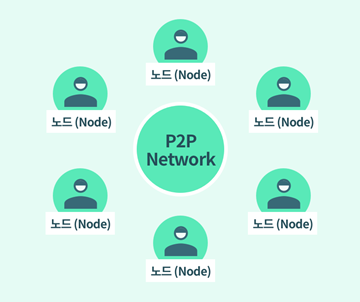
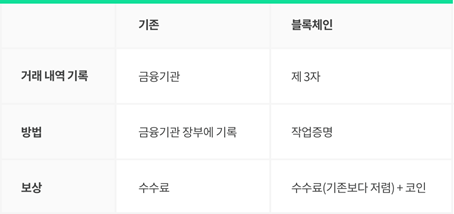
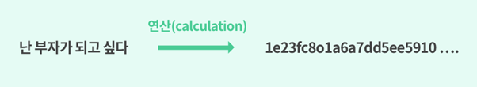
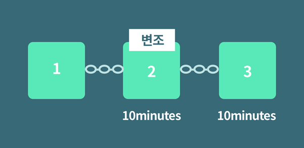

채굴이 무엇인가요?
암호화폐의 거래에서는 누구나 금융기관의 역할을 수행할 수 있습니다.

블록체인 기록을 다운로드 받으면 블록체인 P2P 네트워크의 일원으로서 각자가 금융기관의 역할을 하게 됩니다. 이 기록을 가진 사람들을 ‘노드(Node)’라고 부르며, 이
노드의
과반수 이상이 동의했을 때, 기록으로서 영구적으로 장부에 기록됩니다. 가장 많은 ‘작업’을 한 노드가 어느 기록이 참인지에 대한 결정 권한을 더 많이 가지게 됩니다. 이것이 바로
‘작업증명(Proof of Work)’이라 불리는, 블록체인 네트워크의 블록 생성 방식입니다.

작업증명을 통해 블록에 거래 내역을 정리해주고 그 보상으로 코인과 거래 수수료를 받게 되는데 이 과정을 ‘채굴(Mining)’이라고 합니다. 블록체인의 유지에 필요한 리소스를 제공하고 이에 따른 보상을 받는 개념입니다.

작업 증명은 어떻게 이루어지나요?
작업증명의 과정은 컴퓨터 연산을 통해서 처리됩니다.
블록에 기록되는 모든 기록은 위와 같이 연산을 거쳐 16진수의 숫자로 ‘암호화’되는데, 이 과정을 ‘해싱(hashing)’이라고 합니다. 암호화된 해시 값은 역추적하기가 힘들고 내용이 조금이라도 조작된 경우 해시 값 자체가 변하기 때문에 데이터 손상 여부를 금방 확인할 수 있습니다. → ‘암호화 화폐(Crypto Currency)’
암호화된 거래내역이 위/변조될 위험은 없나요?

거래내역의 위/변조를 위해서는 두 가지 조건이 충족되어야 합니다.
- 해당 블록의 해시 값을 통해 연결된 모든 블록의 정보를 연쇄적으로 다 바꾸어야 한다.
- 10분에 하나씩 생성되는 블록보다 더 빠르게 위/변조한 정보를 전파시켜야 한다.
(출처: banksalad)